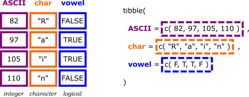

tibble revisitedSo far, we were mainly working with tables in the form of
tibbles or data.frames. We learned already,
that a tibble is eventually a special
data.frame with a slightly changed behaviour.
In the following, we will revisit the data structure and compare it with others.
To this end, we will use the following tibble, which stores the amount of fruits in our fridge per week.
fruitsInFridge <-
tribble(
~week, ~tomato, ~apple,
43L, 4, 2,
44L, 2, 5,
45L, 0, 1.5
)Note, the L after the week values tells R
to treat the values integers (rather than arbitrary numbers that allow
for fractions etc.).
When investigating the data structure using
str(), we get the following.
str(fruitsInFridge)## tibble [3 x 3] (S3: tbl_df/tbl/data.frame)
## $ week : int [1:3] 43 44 45
## $ tomato: num [1:3] 4 2 0
## $ apple : num [1:3] 2 5 1.5Thus, we get a table with three columns of which one stores only
integers and the other two arbitrary
numbers.
Technically, our table is an ordered collection of columns! And each column is a vector, i.e. all data within a column is of the same type, and all columns have the same length. That’s why we can create a tibble also by providing each column separately as a vector.
fruitsInFridge <-
tibble(
week = c(43L, 44L, 45L),
tomato = c( 4, 2, 0),
apple = c( 2, 5, 1.5)
)Before we continue, let’s remember how we can access data within a tibble, which is called subsetting! There are three ways to subset a data structure:
$name[[index]] or [[name]][index (vector)] or [name (vector)] or
[boolean vector] (and negation)Do you remember or guess which is for what? Test your knowledge by
uncommenting one by one the following calls and guess the outcome before
running it. Remember: the str() command provides the
data structure information of the provided object. Thus, you
can use it to check whether the return value is a vector, tibble or
whatever.
fruitsInFridge <- tibble(week=c(43L,44L,45L),tomato=c(4,2,0),apple=c(2,5,1.5))
# What data and data STRUCTURE is the outcome of the following calls?
# fruitsInFridge$tomato %>% str()
# fruitsInFridge[[2]] %>% str()
# fruitsInFridge[["tomato"]] %>% str()
# fruitsInFridge[2] %>% str()
# fruitsInFridge["tomato"] %>% str()
# fruitsInFridge[c(F,T,F)] %>% str()
# fruitsInFridge[-c(1,3)] %>% str()# a vector (column)
fruitsInFridge$tomato %>% str()
# a vector (column)
fruitsInFridge[[2]] %>% str()
fruitsInFridge[["tomato"]] %>% str()
# a tibble with only one column
fruitsInFridge[2] %>% str()
fruitsInFridge["tomato"] %>% str()
fruitsInFridge[c(F,T,F)] %>% str()
fruitsInFridge[-c(1,3)] %>% str()Given the last exercise you might have noted the following:
[] provides you with the same data
structure type as the original one, i.e. a reduced form
of the origin, while[[]] provides a single accessed element as its
respective data structure, and$name is eventually a short notation for
[["name"]].This is depicted by the following images taken from Advanced R for the following list. (We will go into details about lists in the next section.)
x <- list(1:3, "a", 4:6)Given, the list is depicted as train as follows, ie. the data structure via the locomotive and the content as cars.

Accessing a single element using [] or [[]]
produces either a train with one car or just the car
content.

Furthermore, [[]] always targets a single
element, while [] allows to subset multiple
elements (e.g. multiple columns of a data frame or elements from a
vector) as shown below.

list vs. vector and
tibbleSo far, we were working mainly on tabular data in the form of
tibbles (or data.frames). The central idea (of
tidy data) was that each row represents one data set (observation) while
individual features (variables) are organized in columns. Thus, all
values in one column vector are of the same data type
(integer, number, character, …), while a row can show different data
types. This is exemplified in the following image.
 The way to define a tibble on the right of the image hints already at the underlying data organization: a tibble (or data.frame) is an ordered collection of column vectors (here visualized as dashed boxes), with the requirement that all columns have the same length!
Thus, we can access the first column both via its index
[[1]] as well as its name [["ASCII"]].
But what if we need to store data that is comprised of data of
different type and that lacks the association of data elements, i.e. not
all data elements are of the same size/length? In that case we can
neither use a vector (since it requires homogeneity of data
type) nor a tibble (since it requires same column
lengths).
Here, a list is what we need. A list is eventually “an
ordered bag of something”, i.e. you can store anything in it, even more
bags. Think about a list as a purse, which easily holds a comb, a pack
of paper hankerchiefs and a wallet of money. The comb is a (single
element) vector as well as the pack of hankerchiefs while the wallet is
most likely again a list since it has to hold coins, banknotes, cards,
etc. This is exemplified in the following.
myPurse <- list(
comb <- TRUE,
hankerchiefs <- c("used", "unused","crumpled"),
wallet <- list(
coins <- c(1,1,4,5,50),
banknotes <- NA,
cards <- c("DeutscheBank", "BC50")
)
)Note the similarity to the tibble from above, a
list is also an ordered collection but it can contain
anything.
Thus, one should know that a data.frame or
tibble is eventually a special version of a
list with additional features (like the condition about the
equal column lengths etc.).
It is therefore not very surprising that you can access list elements
the same way you do for tibbles, as you can try below.
# given the list from above
myPurse <- list(
comb = TRUE,
hankerchiefs = c("used", "unused","crumpled"),
wallet = list(
coins = c(1,1,4,5,50),
banknotes = NA,
cards = c("DeutscheBank", "BC50")
)
)
# - access the pack of hankerchiefs
# - access the second card within the wallet
# - reduce the purse to comb and wallet
# can you do it via different subsetting methods?# - access the pack of hankerchiefs
myPurse$hankerchiefs
myPurse[[2]]
# - access the second card within the wallet
myPurse$wallet$cards[[2]]
myPurse[["wallet"]][["cards"]][2]
# - reduce the purse to comb and wallet
myPurse[-3]
myPurse[1:2]One can summarize the use of the data structures as follows:
vector = just an array of things all of same data
typelist = bag of something, well suited for unstructured
datadata.frame/tibble = list of column vectors
of same length (rows have meaning)for loop (iteration)Next, we want to learn how to generalize programming tasks. A first step is always to identify redundancy, that is code blocks that do mainly the same thing. If you find more than two related blocks you should start thinking about rewriting your code. We will exemplify this in the following.
To this end, we start with a data structure that provides us with the weights of all kind of things within our fridge, which we might need to know for subsequent cooking.
fruitWeights <-
list(
tomato = c(57, 43, 48, 27),
apple = c(89, 93),
pear = NA,
nuts = list( walnuts = c(3,8,9), nutmeg = c(10) )
)As a first task, we might want to know what is the heaviest fruit per
category. Since the data structure is no data.frame or
tibble, we cannot use summarize() from the
dplyr package or similar things. Thus, we write
print( str_c("Max. weight of tomato = " ,
max( fruitWeights$tomato ) ) )## [1] "Max. weight of tomato = 57"print( str_c("Max. weight of apple = " ,
max( fruitWeights$apple ) ) )## [1] "Max. weight of apple = 93"# ...A closer look reveals that we are doing always the same thing, only the name of the fruit is changed. A rewrite of the code shows this even better.
print( str_c("Max. weight of ",
"tomato",
" = " ,
max( fruitWeights[["tomato"]] ) ) )
print( str_c("Max. weight of ",
"apple",
" = " ,
max( fruitWeights[["apple"]] ) ) )Thus, we could rewrite using a variable instead:
# setting the name of the fruit of interest
fruitName <- "tomato"
print( str_c("Max. weight of ",
fruitName, # using the variable instead
" = " ,
max( fruitWeights[[fruitName]] ) ) ) # same here
# resetting the name of the fruit of interest
fruitName <- "apple"
print( str_c("Max. weight of ",
fruitName,
" = " ,
max( fruitWeights[[fruitName]] ) ) )Now the code redundancy of the print() statement is
obvious. If you have code blocks that are exactly the same and only
differ in the value of a variable, that block is ready to be put
into a for loop!
# defines a new variable and iterates over given values
for (fruitName in c("tomato","apple")) {
print( str_c("Max. weight of ",
fruitName,
" = " ,
max( fruitWeights[[fruitName]] ) ) )
}That is, the for statement defines a new “running”
variable (here fruitName) that “runs” over a given set of
values, i.e. one after another the values are assigned to the variable
and the subsequent code block (in {} brackets) is
executed.
We can even get the values from another variable.
# fruitnames of interest
fruitsOfInterest <- c("tomato","apple")
# defines a new variable and iterates over values from another variable
for (fruitName in fruitsOfInterest) {
print( str_c("Max. weight of ",
fruitName,
" = " ,
max( fruitWeights[[fruitName]] ) ) )
}
## What happens when you extend the list of fruitsOfInterest with "pear"?
## Can you explain your observation?# when running the code using
fruitsOfInterest <- c("tomato","apple","pear")
# the last (new) output is "NA", since no pear is in the fridge.
# Thus, str_c() is asked to concatenate strings with NA, which produces NA.Eventually, the following happens (implicitly without needing us to write it down)…
# fruitnames of interest
fruitsOfInterest <- c("tomato","apple")
# copy first value from value list
fruitName <- fruitsOfInterest[[1]]
# run code block
{ print( str_c("Max. weight of ", ... }
# copy second value from value list
fruitName <- fruitsOfInterest[[2]]
# run code block
{ print( str_c("Max. weight of ", ... }.. which is more or less where we started from. But the
for loop provides a much smaller programming code.
Furthermore, it reduces the chance of coding errors due to
copy-and-paste and provides a code that is much easier to maintain and
read.
Note, you can provide any data object to a for loop as
long you can access its elements via the [[index]]
operator.
Given the latter statement, what do you think happens, when feeding a
tibble to a for loop?
# can you guess the outcome of this loop?
for (something in myPurse) {
print( typeof( something ) )
}# since myPurse[[1]] provides the first COLUMN of the table,
# the for loop iterates all columns and provides the data type of its elements
# since "something" becomes column VECTORS in each loop iteration.You will do iteration based on for loops
whenever you know (in advance) the (number of) elements you
want to iterate on, which is the most common iteration scenario.
In case the number of iterations depends on computations
within the code block of the loop, a while
loop is needed, which checks at the beginning of each iteration
whether to do another round or to stop the iteration. You can also
manually stop iteration (in any loop) using the break
statement, also discussed
here.
if statement (conditional)Another common scenario in programming is the need for conditional code execution. That is you want to run some code block only in case some variable needs correction, the data type is no suited, the user input is missing, … the list is never ending!
As an example, let’s revisit our for loop from above using calling for an extended set of fruits.
# fruitnames of interest
fruitsOfInterest <- c("tomato","apple","pear")
# print max weights
for (fruitName in fruitsOfInterest) {
print( str_c("Max. weight of ",
fruitName,
" = " ,
max( fruitWeights[[fruitName]] ) ) )
}Here we have a problem: the pears are empty (NA) and
thus no output is generated. Let’s tackle this using the already known
is.na() function to check whether fruit weights are
available before printing.
# fruitnames of interest
fruitsOfInterest <- c("tomato","apple","pear")
# print max weights
for (fruitName in fruitsOfInterest) {
if( is.na(fruitWeights[[fruitName]]) ) {
print( str_c("No ",fruitName," in the fridge"))
} else {
print( str_c("Max. weight of ",
fruitName,
" = " ,
max( fruitWeights[[fruitName]] ) ) )
}
}When you study the code from above, you note that depending on the
NA test, either the first or the second code block is
executed and we get a nice output w.r.t. the missing pears.
When running the code in the console, you will face two warnings like the following.
Warning messages:
1: In if (is.na(fruitWeights[[fruitName]])) { :
the condition has length > 1 and only the first element will be used
2: In if (is.na(fruitWeights[[fruitName]])) { :
the condition has length > 1 and only the first element will be usedWhen reading them carefully, you can learn an important point:
if statements need a single TRUE/FALSE
value! When a vector or list with more than one element is
provided to is.na(), each element is evaluated concerning
NA and a respectively long data structure is returned:
is.na(fruitWeights[["tomato"]])## [1] FALSE FALSE FALSE FALSEis.na(fruitWeights[["apple"]])## [1] FALSE FALSESince we have only two alternative code blocks within an
if-elsestatement, a single value is needed to decide which
way to go. Thus, R takes only the first TRUE/FALSE element
and ignores the rest (while throwing the observed warning).
This can be amended by extending our check:
# fruitnames of interest
fruitsOfInterest <- c("tomato","apple","pear")
# print max weights
for (fruitName in fruitsOfInterest) {
if( length(fruitWeights[[fruitName]]) == 1
&& is.na(fruitWeights[[fruitName]]) )
{
print( str_c("No ",fruitName," in the fridge"))
} else {
print( str_c("Max. weight of ",
fruitName,
" = " ,
max( fruitWeights[[fruitName]] ) ) )
}
}Note, I used the logical && (double ampersand!)
operator to connect both statements in the sense of “AND”, i.e. only if
both are TRUE the overall statement is TRUE.
Alternatively, you can use || to combine them in an “OR”
sense, i.e. if at least one of both is TRUE the OR
combination is TRUE as well.
Finally, we want to take care of the “nut list problem”. Eventually,
we could check whether the current fruit object is a list
using the is.list() function. Note, most “checking
functions” in R start with is...() or
is_..()!
# fruitnames of interest
fruitsOfInterest <- c("tomato","apple","pear", "nuts")
# print max weights
for (fruitName in fruitsOfInterest) {
if( length(fruitWeights[[fruitName]]) == 1
&& is.na(fruitWeights[[fruitName]]) )
{
print( str_c("No ",fruitName," in the fridge"))
} else if( is.list(fruitWeights[[fruitName]]) ) {
print( str_c("Sorry, ", fruitName," is a list. Don't know how to handle!"))
} else {
print( str_c("Max. weight of ",
fruitName,
" = " ,
max( fruitWeights[[fruitName]] ) ) )
}
}
## TASK: rewrite the code from above in way such that
# - no "fruitsOfInterest" variable is needed/used
# - the for loops runs on all (direct) elements of "fruitWeights" using the "names()" function# eventually, only the loop header has to be changed..
for (fruitName in names(fruitWeights)) {
# ...
}Note, we “chained” two conditional if statements after
another to organize our three possible cases.
Note further, the else {} part of an if
statement is optional and can be omitted if not needed.
functionWhen writing more and larger data analyses, one often sees another kind of code redundancy. Namely more or less the same code for data wrangling is copied in order to apply it to another data set, i.e. typically another variable.
An example is given below when applying our printing strategy to both
the fruitWeights as well as fruitsInFridge
variable.
# get max values of fruitWeights
for (fruitName in names(fruitWeights)) {
if( length(fruitWeights[[fruitName]]) == 1
&& is.na(fruitWeights[[fruitName]]) )
{
print( str_c("No ",fruitName," in the fridge"))
} else if( is.list(fruitWeights[[fruitName]]) ) {
print( str_c("Sorry, ", fruitName," is a list. Don't know how to handle!"))
} else {
print( str_c("Max. of ",
fruitName,
" = " ,
max( fruitWeights[[fruitName]] ) ) )
}
}
# get max values of fruitsInFridge
for (fruitName in names(fruitsInFridge)) {
if( length(fruitsInFridge[[fruitName]]) == 1
&& is.na(fruitsInFridge[[fruitName]]) )
{
print( str_c("No ",fruitName," in the fridge"))
} else if( is.list(fruitsInFridge[[fruitName]]) ) {
print( str_c("Sorry, ", fruitName," is a list. Don't know how to handle!"))
} else {
print( str_c("Max. of ",
fruitName,
" = " ,
max( fruitsInFridge[[fruitName]] ) ) )
}
}When looking closely, the only difference is the use of the two variables in within the two parts. Beside that, both parts are identical.
Whenever you observe such a situation it is time to generalize your code by defining a function! A function comes with the following general layout.
nameOfMyFunction <- function( inputArgument1, inputArgument2, ... ) {
# some code block to be executed that uses the arguments
}In our case, the whole for loop defines the function
body, i.e. the code block to be executed, while we replace the specific
variables it is operating on (fruitWeights and
fruitsInFridge) with a generic input argument name
(listOfInterest) defined in the function()
part.
## CHECK THE TASK AT THE END OF THE CODE, PLEASE SCROLL DOWN !
# my first function that abstracts from the variable the loop is operating on
# there is only one input argument "listOfInterest" that provides the data to operate on
maxOfElements <- function( listOfInterest ) {
# here comes the old code block but this time using "listOfInterest" instead
# also the running variable is renamed to be more generic
for (elementName in names(listOfInterest)) {
if( length(listOfInterest[[elementName]]) == 1
&& is.na(listOfInterest[[elementName]]) )
{
print( str_c("No ",elementName," in the fridge"))
} else if( is.list(listOfInterest[[elementName]]) ) {
print( str_c("Sorry, ", elementName," is a list. Don't know how to handle!"))
} else {
print( str_c("Max. of ",
elementName,
" = " ,
max( listOfInterest[[elementName]] ) ) )
}
}
}
# so far nothing happened
# the function is only DEFINED but you now need to explicitely call it!
maxOfElements(fruitWeights)
## TASK: now call it for fruitsInFridge!maxOfElements(fruitsInFridge)Note, you always have to “execute” the code of a function, in order
to “load it into R”. Afterwards, the function is ready to be used and
shows in the “Environment” tab of RStudio in the “Functions” section.
This is exactly what happens when you “load” a library like
dplyr or ggplot2, i.e. the function from the
respective package are loaded for subsequent use.
return() valueInstead of printing, we might want to store the data and provide it
as a data structure for subsequent processing. This can be done using
the return() function. When it is called, it returns the
given single object and stops the execution of the
function code. Thus, subsequent code is not executed!
# my first function with return value
maxOfElements <- function( listOfInterest ) {
# let's define an empty list to be filled
returnList = list()
# collect the data
for (elementName in names(listOfInterest)) {
if( (length(listOfInterest[[elementName]]) == 1
&& is.na(listOfInterest[[elementName]]) )
# Note, this combines the first two "if" checks with an OR statement!
|| is.list(listOfInterest[[elementName]]) )
{
# no information available, so dont provide any!
returnList[[elementName]] = NA
} else {
# store maximum
returnList[[elementName]] = max( listOfInterest[[elementName]] )
}
}
# return the final list
return( returnList )
}
# let's try (implicit print of the returned list)
maxOfElements(fruitWeights)## $tomato
## [1] 57
##
## $apple
## [1] 93
##
## $pear
## [1] NA
##
## $nuts
## [1] NAGiven that we now have a function at hand, we can even generalize it
to tackle the problem with the enclosed nuts list of the
fruitWeights list. In detail, whenever we encounter a list,
we call again our maxOfElements() function (from within the
function itself). This is called recursion or recursive
iteration.
# recursive version that calls itself for sublists
maxOfElements <- function( listOfInterest ) {
returnList = list()
for (elementName in names(listOfInterest)) {
if( length(listOfInterest[[elementName]]) == 1
&& is.na(listOfInterest[[elementName]]) )
{
returnList[[elementName]] = NA
} else if( is.list(listOfInterest[[elementName]]) ) {
# let's call the same function on the sublist (recursive call)
returnList[[elementName]] = maxOfElements( listOfInterest[[elementName]] )
} else {
# store maximum
returnList[[elementName]] = max( listOfInterest[[elementName]] )
}
}
return( returnList )
}
# let's test the recursive processing the nested data structure
maxOfElements(fruitWeights)## $tomato
## [1] 57
##
## $apple
## [1] 93
##
## $pear
## [1] NA
##
## $nuts
## $nuts$walnuts
## [1] 9
##
## $nuts$nutmeg
## [1] 10Finally, we might want to create a similar function to
maxOfElemens() but this time returning the
min() of each. Again, as a first attempt, we would copy the
code of maxOfElement(), rename it and replace the
max() calls with min() calls. Even thinking
about it, you might imagine the extent of code redundancy, which again
is inefficient and a common cause for mistakes and trouble.
Instead, we can generalize our function to work with arbitrary functions. To this end, we introduce another input argument, which takes the name of the function to call, i.e. the function name without brackets. As done when generalizing from the variable we were working on, we now replace the function to call with the respective generic argument name.
## CHECK THE TASK AT THE END OF THE CODE!
# generic version that calls a given function for property computation
propertyOfElements <- function( listOfInterest, propertyFunction = max ) {
returnList = list()
for (elementName in names(listOfInterest)) {
if( length(listOfInterest[[elementName]]) == 1
&& is.na(listOfInterest[[elementName]]) )
{
returnList[[elementName]] = NA
} else if( is.list(listOfInterest[[elementName]]) ) {
# we have to "forward" the "propertyFunction" value to the recursive call (explained below)
returnList[[elementName]] = propertyOfElements( listOfInterest[[elementName]], propertyFunction )
} else {
# store the requested "property"
returnList[[elementName]] = propertyFunction( listOfInterest[[elementName]] )
}
}
return( returnList )
}
# let's call with different functions (without argument names relying on argument order)
propertyOfElements(fruitWeights, max)
# or using explicit argument names for assignment
propertyOfElements( listOfInterest = fruitWeights, propertyFunction = min)
# TASK-1: identify the length of each element using a respective call to our new function
# TASK-2: call the function WITHOUT the second argument
# What do you observe? Any explanations?# TASK-1: calling using "length()" function
propertyOfElements(fruitWeights, length)# TASK-2: when calling the function without the second argument
propertyOfElements(fruitWeights)
# the default value "max" is used for "propertyFunction",
# which is defined in the head of the function definitionThus, we can store a “handle” to a function by assigning its “name” (without brackets) to a variable (or function argument, which is eventually a local variable). That way, we can use the variable itself to subsequently call the function (see above).
When providing a value for an argument within the function definition
(here done for the propertyFunction argument), the value
can be omitted when calling the function. In that case, the provided
default value is used for the argument.
Note, if we would have not included/forwarded the
propertyFunction argument to the recursive call in the
above function, the default value (max) would have been
used for all recursively processed sublists, regardless what the user
set to propertyFunction in the initial call!
But before we continue, think about the following questions, which can be answered with the current material.
list,
tibble and vector?[] or
[[]] for subsetting?for loop and when would you use a
while loop?TRUE && FALSE and of
TRUE || FALSE?vector = all elements are same data typelist = most general, can contain anything, any size,
…data.frame/tibble = list of vectors (of same lengths)
[] = reduces the current object to the selected part(s)
(same data container)[[]] = provides a single element
(element-specific data container)$ = shortcut for [[]] with namefor or
while loops)if/else
statements)function
definition and usage)for loop generalizationfunction
generalizationreturn()